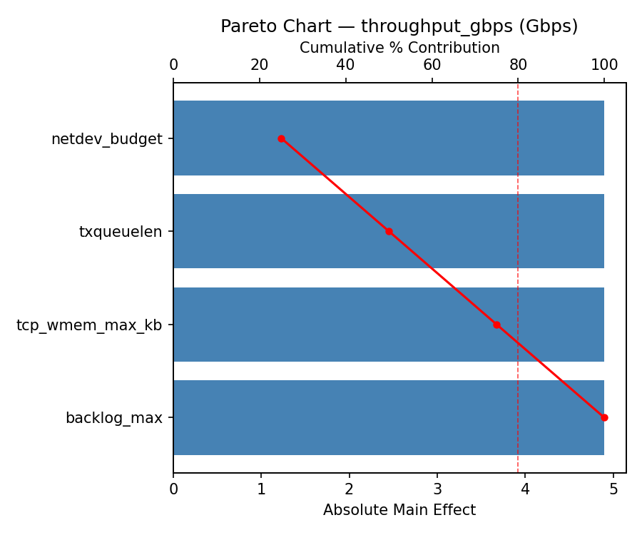
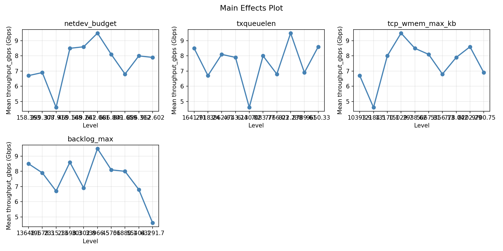
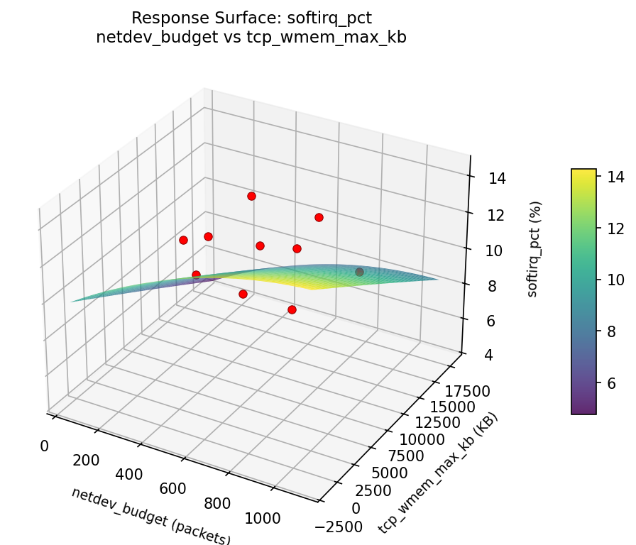
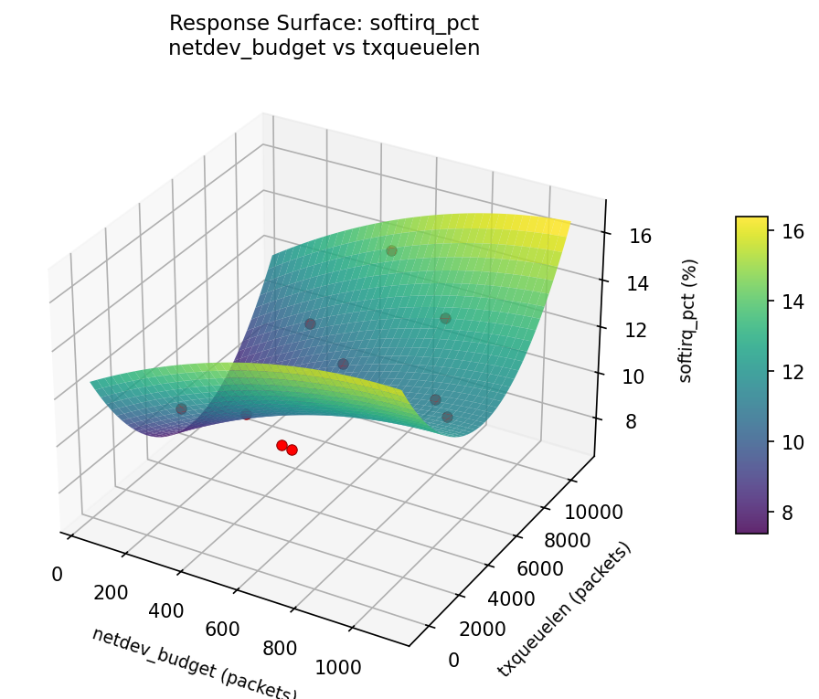
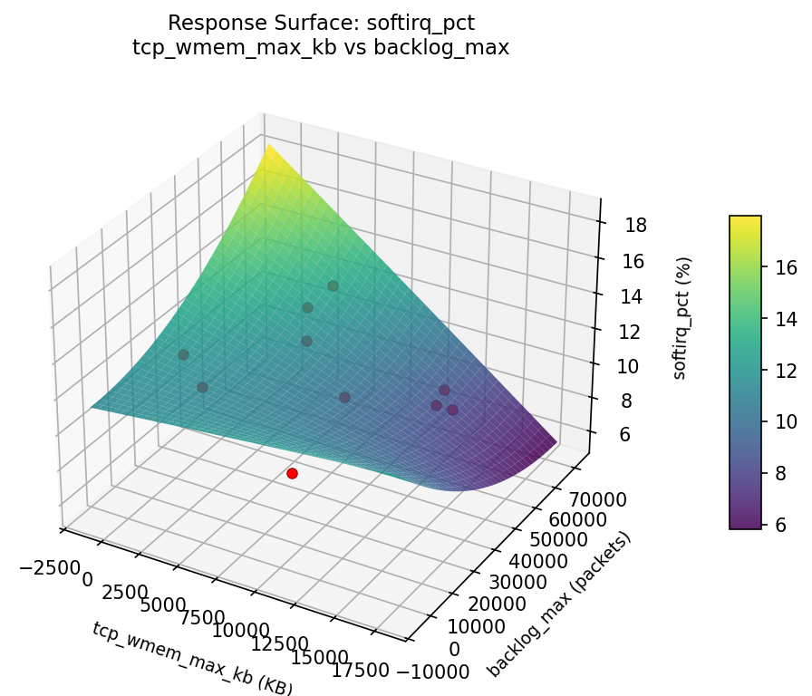
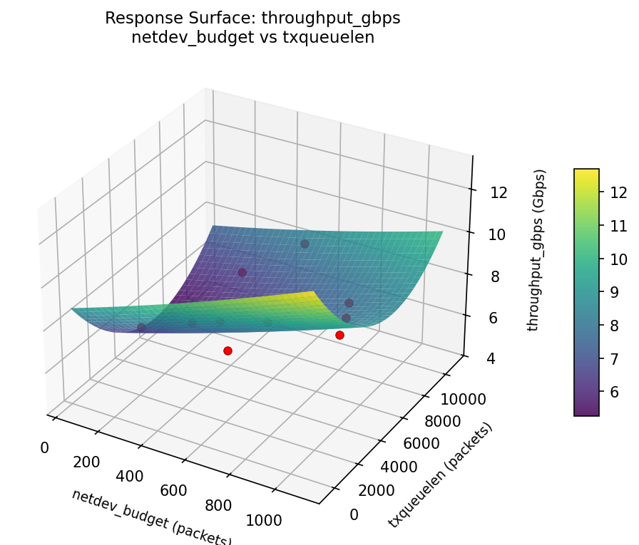
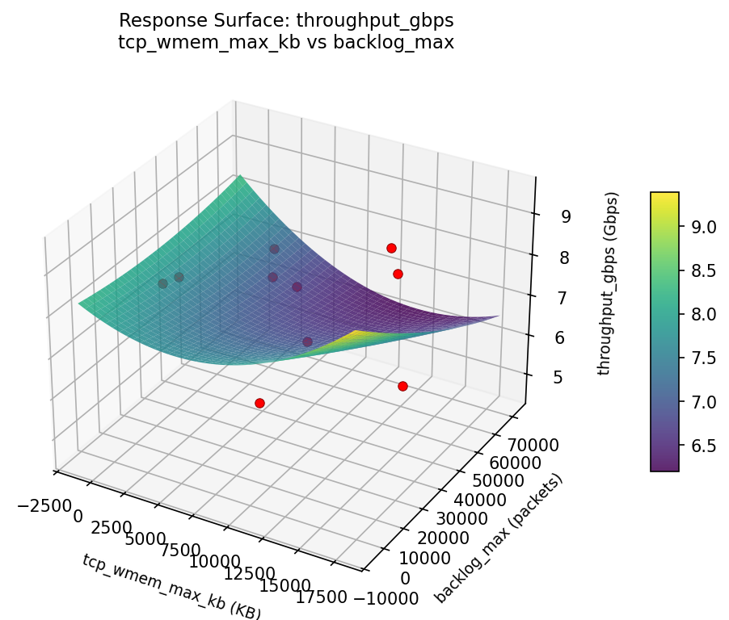
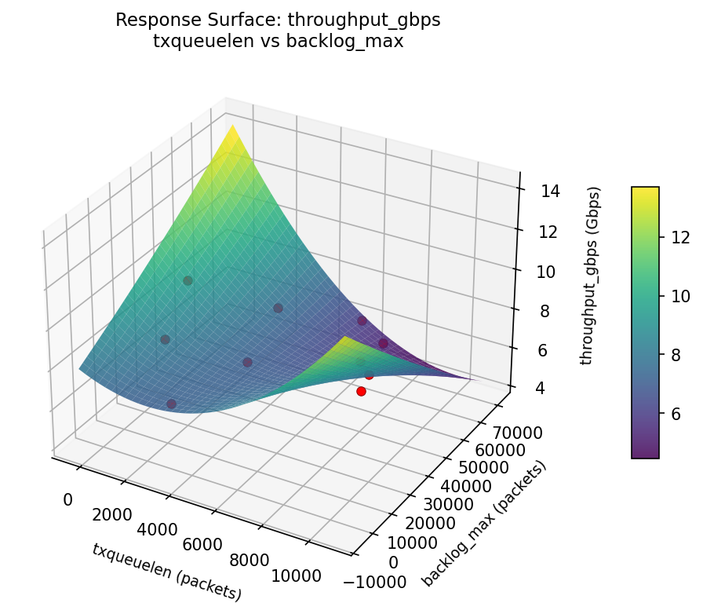
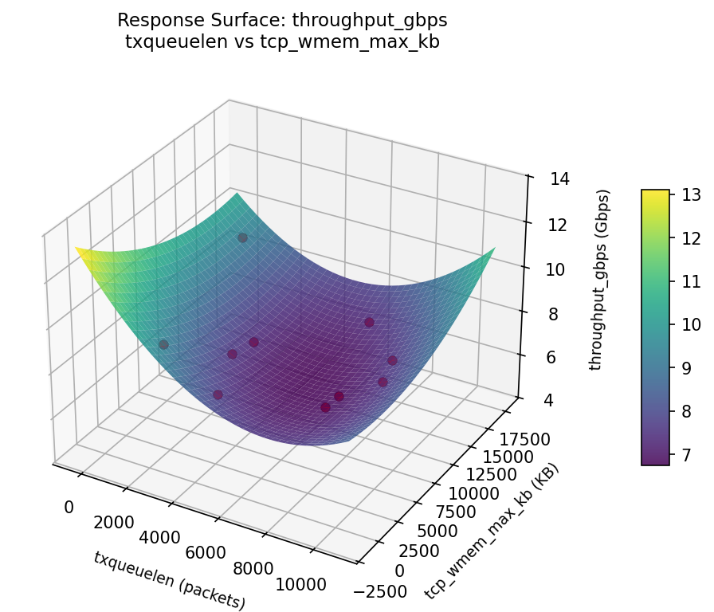

Summary
This experiment investigates network buffer sizing. Latin Hypercube of 4 kernel network buffer parameters for throughput and latency.
The design varies 4 factors: netdev budget (packets), ranging from 128 to 1024, txqueuelen (packets), ranging from 500 to 10000, tcp wmem max kb (KB), ranging from 256 to 16384, and backlog max (packets), ranging from 1000 to 65536. The goal is to optimize 2 responses: throughput gbps (Gbps) (maximize) and softirq pct (%) (minimize). Fixed conditions held constant across all runs include nic = mlx5, ring buffer = 4096.
Latin Hypercube Sampling was used to space 10 runs across the 4-dimensional factor space with good coverage and minimal gaps, making it ideal for computer experiments where the response surface may be complex.
Key Findings
For throughput gbps, the most influential factors were netdev budget (25.0%), txqueuelen (25.0%), tcp wmem max kb (25.0%). The best observed value was 9.5 (at netdev budget = 394.644, txqueuelen = 4136.38, tcp wmem max kb = 13036.9).
For softirq pct, the most influential factors were netdev budget (25.0%), txqueuelen (25.0%), tcp wmem max kb (25.0%). The best observed value was 7.0 (at netdev budget = 927.998, txqueuelen = 1296.19, tcp wmem max kb = 10804.7).
Recommended Next Steps
- Consider whether any fixed factors should be varied in a future study.
Experimental Setup
Factors
| Factor | Low | High | Unit |
|---|
netdev_budget | 128 | 1024 | packets |
txqueuelen | 500 | 10000 | packets |
tcp_wmem_max_kb | 256 | 16384 | KB |
backlog_max | 1000 | 65536 | packets |
Fixed: nic = mlx5, ring_buffer = 4096
Responses
| Response | Direction | Unit |
|---|
throughput_gbps | ↑ maximize | Gbps |
softirq_pct | ↓ minimize | % |
Configuration
{
"metadata": {
"name": "Network Buffer Sizing",
"description": "Latin Hypercube of 4 kernel network buffer parameters for throughput and latency"
},
"factors": [
{
"name": "netdev_budget",
"levels": [
"128",
"1024"
],
"type": "continuous",
"unit": "packets"
},
{
"name": "txqueuelen",
"levels": [
"500",
"10000"
],
"type": "continuous",
"unit": "packets"
},
{
"name": "tcp_wmem_max_kb",
"levels": [
"256",
"16384"
],
"type": "continuous",
"unit": "KB"
},
{
"name": "backlog_max",
"levels": [
"1000",
"65536"
],
"type": "continuous",
"unit": "packets"
}
],
"fixed_factors": {
"nic": "mlx5",
"ring_buffer": "4096"
},
"responses": [
{
"name": "throughput_gbps",
"optimize": "maximize",
"unit": "Gbps"
},
{
"name": "softirq_pct",
"optimize": "minimize",
"unit": "%"
}
],
"settings": {
"operation": "latin_hypercube",
"test_script": "use_cases/55_network_buffer_sizing/sim.sh"
}
}
Experimental Matrix
The Latin Hypercube Design produces 10 runs. Each row is one experiment with specific factor settings.
| Run | netdev_budget | txqueuelen | tcp_wmem_max_kb | backlog_max |
|---|
| 1 | 999.331 | 8451.46 | 12730.9 | 42798 |
| 2 | 783.437 | 2826.24 | 3008.52 | 10985.4 |
| 3 | 581.536 | 4194.35 | 9848.97 | 50175.2 |
| 4 | 544.736 | 1191.66 | 5069.49 | 36370.6 |
| 5 | 170.187 | 5445.49 | 14493 | 30159.2 |
| 6 | 448.936 | 4441.13 | 16113.7 | 4774.58 |
| 7 | 691.612 | 7656.77 | 10509.5 | 53291.3 |
| 8 | 275.445 | 2062.05 | 7919.05 | 15684.1 |
| 9 | 339.681 | 6335.17 | 5510.83 | 20649.1 |
| 10 | 871.247 | 9482 | 674.184 | 59620.2 |
Step-by-Step Workflow
1
Preview the design
$ python doe.py info --config use_cases/55_network_buffer_sizing/config.json
2
Generate the runner script
$ python doe.py generate --config use_cases/55_network_buffer_sizing/config.json \
--output use_cases/55_network_buffer_sizing/results/run.sh --seed 42
3
Execute the experiments
$ bash use_cases/55_network_buffer_sizing/results/run.sh
4
Analyze results
$ python doe.py analyze --config use_cases/55_network_buffer_sizing/config.json
5
Get optimization recommendations
$ python doe.py optimize --config use_cases/55_network_buffer_sizing/config.json
6
Generate the HTML report
$ python doe.py report --config use_cases/55_network_buffer_sizing/config.json \
--output use_cases/55_network_buffer_sizing/results/report.html
Features Exercised
| Feature | Value |
|---|
| Design type | latin_hypercube |
| Factor types | continuous (all 4) |
| Arg style | double-dash |
| Responses | 2 (throughput_gbps ↑, softirq_pct ↓) |
| Total runs | 10 |
Analysis Results
Generated from actual experiment runs using the DOE Helper Tool.
Response: throughput_gbps
Top factors: netdev_budget (25.0%), txqueuelen (25.0%), tcp_wmem_max_kb (25.0%).
Pareto Chart

Main Effects Plot

Response: softirq_pct
Top factors: netdev_budget (25.0%), txqueuelen (25.0%), tcp_wmem_max_kb (25.0%).
Pareto Chart

Main Effects Plot

Response Surface Plots
3D surfaces fitted with quadratic RSM. Red dots are observed data points.
softirq pct netdev budget vs backlog max

softirq pct netdev budget vs tcp wmem max kb

softirq pct netdev budget vs txqueuelen

softirq pct tcp wmem max kb vs backlog max

softirq pct txqueuelen vs backlog max

softirq pct txqueuelen vs tcp wmem max kb

throughput gbps netdev budget vs backlog max

throughput gbps netdev budget vs tcp wmem max kb

throughput gbps netdev budget vs txqueuelen

throughput gbps tcp wmem max kb vs backlog max

throughput gbps txqueuelen vs backlog max

throughput gbps txqueuelen vs tcp wmem max kb

Full Analysis Output
=== Main Effects: throughput_gbps ===
Factor Effect Std Error % Contribution
--------------------------------------------------------------
netdev_budget 4.9000 0.4326 25.0%
txqueuelen 4.9000 0.4326 25.0%
tcp_wmem_max_kb 4.9000 0.4326 25.0%
backlog_max 4.9000 0.4326 25.0%
=== Summary Statistics: throughput_gbps ===
netdev_budget:
Level N Mean Std Min Max
------------------------------------------------------------
141.902 1 8.1000 0.0000 8.1000 8.1000
296.804 1 8.6000 0.0000 8.6000 8.6000
382.396 1 7.9000 0.0000 7.9000 7.9000
420.618 1 8.5000 0.0000 8.5000 8.5000
489.48 1 6.8000 0.0000 6.8000 6.8000
625.678 1 8.0000 0.0000 8.0000 8.0000
675.568 1 9.5000 0.0000 9.5000 9.5000
792.716 1 6.9000 0.0000 6.9000 6.9000
915.73 1 4.6000 0.0000 4.6000 4.6000
983.282 1 6.7000 0.0000 6.7000 6.7000
txqueuelen:
Level N Mean Std Min Max
------------------------------------------------------------
2169.97 1 6.8000 0.0000 6.8000 6.8000
3131.61 1 8.1000 0.0000 8.1000 8.1000
3721.18 1 8.5000 0.0000 8.5000 8.5000
4984.16 1 6.7000 0.0000 6.7000 6.7000
516.073 1 7.9000 0.0000 7.9000 7.9000
5955.96 1 4.6000 0.0000 4.6000 4.6000
6912.96 1 8.6000 0.0000 8.6000 8.6000
8063.85 1 8.0000 0.0000 8.0000 8.0000
8330.83 1 6.9000 0.0000 6.9000 6.9000
9973.92 1 9.5000 0.0000 9.5000 9.5000
tcp_wmem_max_kb:
Level N Mean Std Min Max
------------------------------------------------------------
10049.8 1 8.1000 0.0000 8.1000 8.1000
11975.4 1 9.5000 0.0000 9.5000 9.5000
14274.9 1 8.6000 0.0000 8.6000 8.6000
1499.12 1 8.0000 0.0000 8.0000 8.0000
15297.8 1 6.8000 0.0000 6.8000 6.8000
2400.1 1 7.9000 0.0000 7.9000 7.9000
4413.07 1 6.7000 0.0000 6.7000 6.7000
6200.12 1 8.5000 0.0000 8.5000 8.5000
7325.1 1 6.9000 0.0000 6.9000 6.9000
8454.68 1 4.6000 0.0000 4.6000 4.6000
backlog_max:
Level N Mean Std Min Max
------------------------------------------------------------
10619.6 1 6.9000 0.0000 6.9000 6.9000
15324.1 1 8.5000 0.0000 8.5000 8.5000
23473.2 1 9.5000 0.0000 9.5000 9.5000
2836.19 1 7.9000 0.0000 7.9000 7.9000
29704.1 1 4.6000 0.0000 4.6000 4.6000
38527.6 1 8.0000 0.0000 8.0000 8.0000
43098.4 1 8.1000 0.0000 8.1000 8.1000
52190.7 1 6.8000 0.0000 6.8000 6.8000
57142 1 8.6000 0.0000 8.6000 8.6000
65367 1 6.7000 0.0000 6.7000 6.7000
=== Main Effects: softirq_pct ===
Factor Effect Std Error % Contribution
--------------------------------------------------------------
netdev_budget 7.3000 0.6716 25.0%
txqueuelen 7.3000 0.6716 25.0%
tcp_wmem_max_kb 7.3000 0.6716 25.0%
backlog_max 7.3000 0.6716 25.0%
=== Summary Statistics: softirq_pct ===
netdev_budget:
Level N Mean Std Min Max
------------------------------------------------------------
141.902 1 13.1000 0.0000 13.1000 13.1000
296.804 1 14.3000 0.0000 14.3000 14.3000
382.396 1 12.1000 0.0000 12.1000 12.1000
420.618 1 11.5000 0.0000 11.5000 11.5000
489.48 1 13.4000 0.0000 13.4000 13.4000
625.678 1 9.7000 0.0000 9.7000 9.7000
675.568 1 11.3000 0.0000 11.3000 11.3000
792.716 1 10.8000 0.0000 10.8000 10.8000
915.73 1 7.0000 0.0000 7.0000 7.0000
983.282 1 9.9000 0.0000 9.9000 9.9000
txqueuelen:
Level N Mean Std Min Max
------------------------------------------------------------
2169.97 1 13.4000 0.0000 13.4000 13.4000
3131.61 1 13.1000 0.0000 13.1000 13.1000
3721.18 1 11.5000 0.0000 11.5000 11.5000
4984.16 1 9.9000 0.0000 9.9000 9.9000
516.073 1 12.1000 0.0000 12.1000 12.1000
5955.96 1 7.0000 0.0000 7.0000 7.0000
6912.96 1 14.3000 0.0000 14.3000 14.3000
8063.85 1 9.7000 0.0000 9.7000 9.7000
8330.83 1 10.8000 0.0000 10.8000 10.8000
9973.92 1 11.3000 0.0000 11.3000 11.3000
tcp_wmem_max_kb:
Level N Mean Std Min Max
------------------------------------------------------------
10049.8 1 13.1000 0.0000 13.1000 13.1000
11975.4 1 11.3000 0.0000 11.3000 11.3000
14274.9 1 14.3000 0.0000 14.3000 14.3000
1499.12 1 9.7000 0.0000 9.7000 9.7000
15297.8 1 13.4000 0.0000 13.4000 13.4000
2400.1 1 12.1000 0.0000 12.1000 12.1000
4413.07 1 9.9000 0.0000 9.9000 9.9000
6200.12 1 11.5000 0.0000 11.5000 11.5000
7325.1 1 10.8000 0.0000 10.8000 10.8000
8454.68 1 7.0000 0.0000 7.0000 7.0000
backlog_max:
Level N Mean Std Min Max
------------------------------------------------------------
10619.6 1 10.8000 0.0000 10.8000 10.8000
15324.1 1 11.5000 0.0000 11.5000 11.5000
23473.2 1 11.3000 0.0000 11.3000 11.3000
2836.19 1 12.1000 0.0000 12.1000 12.1000
29704.1 1 7.0000 0.0000 7.0000 7.0000
38527.6 1 9.7000 0.0000 9.7000 9.7000
43098.4 1 13.1000 0.0000 13.1000 13.1000
52190.7 1 13.4000 0.0000 13.4000 13.4000
57142 1 14.3000 0.0000 14.3000 14.3000
65367 1 9.9000 0.0000 9.9000 9.9000
Optimization Recommendations
=== Optimization: throughput_gbps ===
Direction: maximize
Best observed run: #9
netdev_budget = 394.644
txqueuelen = 4136.38
tcp_wmem_max_kb = 13036.9
backlog_max = 34304.2
Value: 9.5
RSM Model (linear, R² = 0.3711, Adj R² = -0.1320):
Coefficients:
intercept +7.5601
netdev_budget -0.6191
txqueuelen +0.8078
tcp_wmem_max_kb -0.3998
backlog_max -0.8356
Predicted optimum (from linear model):
netdev_budget = 188.198
txqueuelen = 3080.52
tcp_wmem_max_kb = 4973.91
backlog_max = 1650.03
Predicted value: 8.7118
Model quality: Weak fit — consider adding center points or using a different design.
Factor importance:
1. netdev_budget (effect: 4.9, contribution: 25.0%)
2. txqueuelen (effect: 4.9, contribution: 25.0%)
3. tcp_wmem_max_kb (effect: 4.9, contribution: 25.0%)
4. backlog_max (effect: 4.9, contribution: 25.0%)
=== Optimization: softirq_pct ===
Direction: minimize
Best observed run: #3
netdev_budget = 927.998
txqueuelen = 1296.19
tcp_wmem_max_kb = 10804.7
backlog_max = 56276.8
Value: 7.0
RSM Model (linear, R² = 0.6274, Adj R² = 0.3294):
Coefficients:
intercept +11.2881
netdev_budget -1.2532
txqueuelen +2.5401
tcp_wmem_max_kb -1.4099
backlog_max +0.2578
Predicted optimum (from linear model):
netdev_budget = 817.529
txqueuelen = 9753.44
tcp_wmem_max_kb = 1840.53
backlog_max = 60047.6
Predicted value: 14.3674
Model quality: Moderate fit — use predictions directionally, not precisely.
Factor importance:
1. netdev_budget (effect: 7.3, contribution: 25.0%)
2. txqueuelen (effect: 7.3, contribution: 25.0%)
3. tcp_wmem_max_kb (effect: 7.3, contribution: 25.0%)
4. backlog_max (effect: 7.3, contribution: 25.0%)